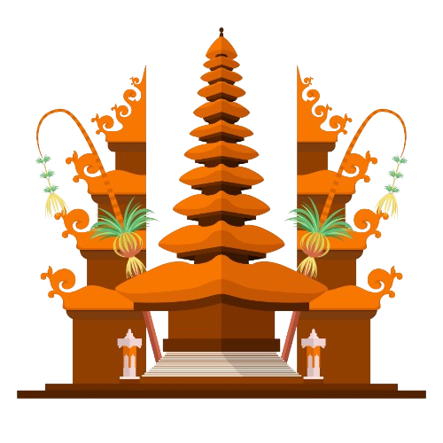
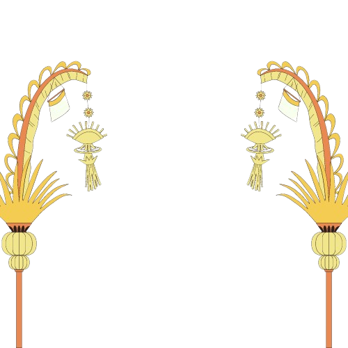
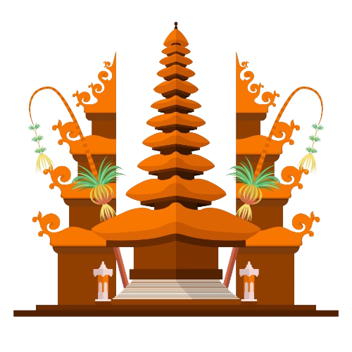
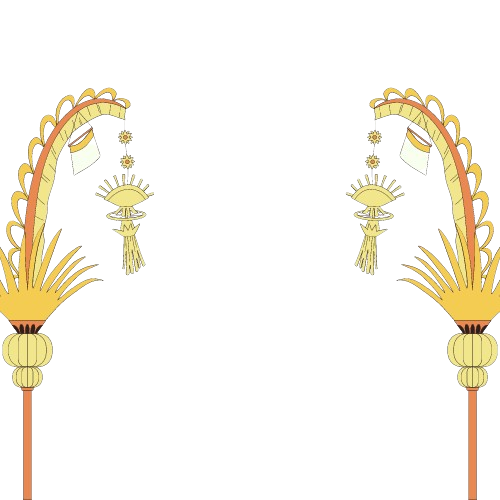

Kata "Galungan" berasal dari bahasa Jawa kuno yang berarti bertarung. Galungan juga biasa disebut dengan 'dungulan' yang artinya menang. Meski terdapat perbedaan penyebutan Wuku Galungan di Jawa maupun Wuku Dungulan di Bali, keduanya memiliki arti yang sama yaitu wuku yang kesebelas. Adapun sejarah awal mula perayaan Galungan ini tidaklah diketahui secara pasti. Sementara itu menurut Lontar Purana Bali Dwipa, Hari Raya Galungan pertama kali dirayakan pada hari Purnama Kapat (Budha Kliwon Dungulan) di tahun 882 Masehi atau tahun Saka 804. Dalam kitab atau pustaka suci umat Hindu tersebut disebutkan, "Punang aci Galungan ika ngawit, Bu, Ka, Dungulan sasih kacatur, tanggal 15, isaka 804. Bangun indria Buwana ikang Bali rajya." Artinya: "Perayaan (upacara) Hari Raya Galungan itu pertama-tama adalah pada hari Rabu Kliwon, (Wuku) Dungulan sasih kapat tanggal 15, tahun 804 Saka. Keadaan Pulau Bali bagaikan Indra Loka."